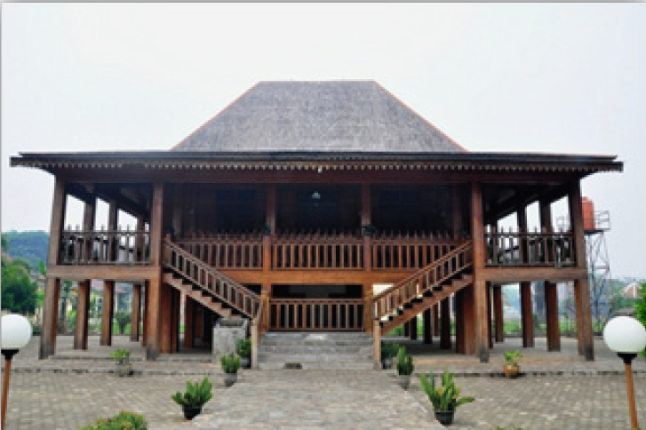
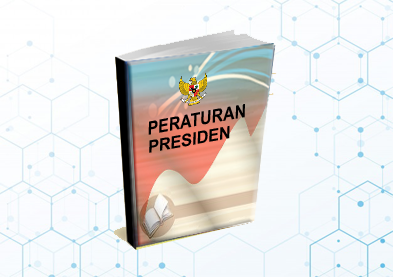
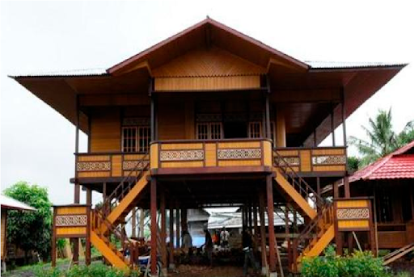

|

Majalah EdukasiMajalah ini dihadirkan dalam rangka turut berpartisipasi dalam mencerdaskan kehidupan bangsa. Majalah ini diterbitkan dengan tujuan sebatas memberikan informasi umum. Seluruh isi majalah ini menjadi tanggung jawab penulis secara keseluruhan sehingga isinya tidak mencerminkan kebijakan atau pandangan tim redaksi majalah. Majalah ini telah menerapkan creative common license Attribution- ShareAlike. Oleh karena itu, silakan memperbanyak, mengutip sebagian, ataupun menyebarkan seluruh isi Majalah ini dengan mencantumkan sumbernya tanpa perlu meminta izin terlebih dahulu kepada pihak editor. Alhamdulillah, majalah bulanan Education Magazine dapat kembali hadir ke hadapan para pembaca. Pada edisi ke-80 ini tim redaksi memuat 4 artikel dari 4 bidang berbeda. Kami kembali memberikan kuis di akhir majalah bagi pembaca yang tertarik mendapatkan hadiah dari tim redaksi. Sebagai informasi tambahan, majalah Education Magazine telah terbit sejak 2018. Dibalik kesuksesan ini tentunya banyak pihak yang terlibat dalam prosuksi maupun penulisannya. Majalah ini diterbitkan setiap bulan pada awal bulan dan memuat berbagai artikel yang berbeda bidang setiap terbitannya. Kritik dan saran sangat kami harapkan dari para pembaca untuk terus meningkatkan kualitas majalah ini. Silakan kunjungi situs https://educationmagazine.com untuk menyimak kegiatan kami lainnya. Mudah-mudahan majalah sederhana ini bisa terus bermanfaat bagi para pembaca, khususnya para siswa dan penggiat pendidikan, sebagai bacaan alternatif di tengah keringnya bacaan-bacaan bermutu yang ringan dan populer. |

Menelisik Substansi Perpres No. 87/2017 |
||
|

Filosofi dan Eksistensi Rumah Limas |
Biology

Biologi adalah ilmu yang mempelajari tentang alam, baik penyusunnya ataupun pengarugnya terhadap kehidupan.
Mathematics

Matematika merupakan cabang ilmu yang mempelajari tentang logika, perhitungan, himpunan, dan masih banyak lagi. penerapan matematika dalam bidang teknologi juga sangat banyak terutama dalam bidang pengolahan data. Matematika juga termasuk mata pelajaran yang dipelajari hampir disemua jenjang pendidikan.
Physics

Fisika merupakan ilmu pengetahuan dimana didalamnya mempelajari sifat dan fenimena alam atau gejala alam serta seluruh interaksi yang ada didalamnya.
Chemist

Kimia merupakan ilmu tentang materi, sifat, struktur, perubahan/reaksinya, serta energi yang menyertai perubahan tersebut. Kimia secara khusus dibagi menjadi beberapa bidang secara khusus yaitu kimia analisis, kimia organik, kimia anorganik, kimia fisik, dan biokimia